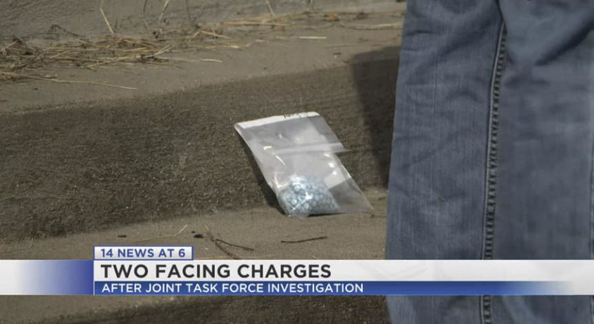
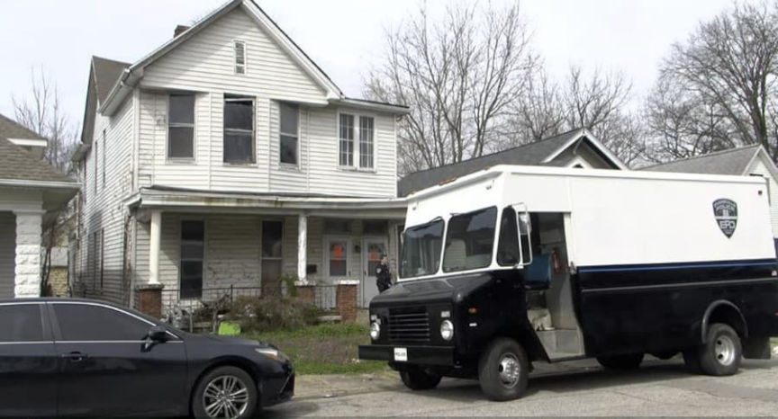
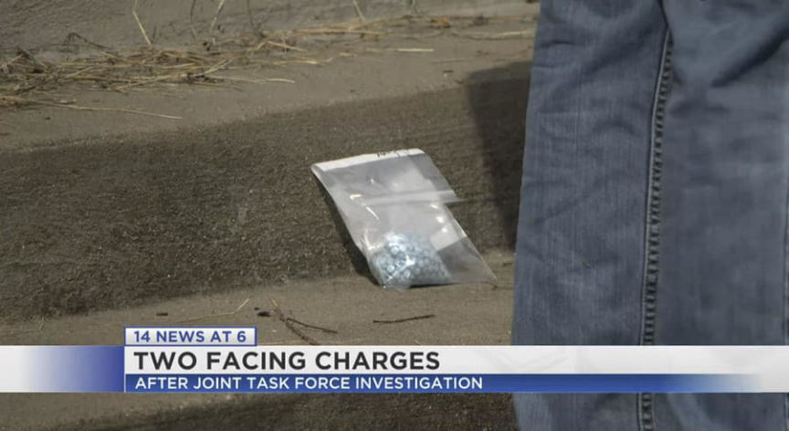
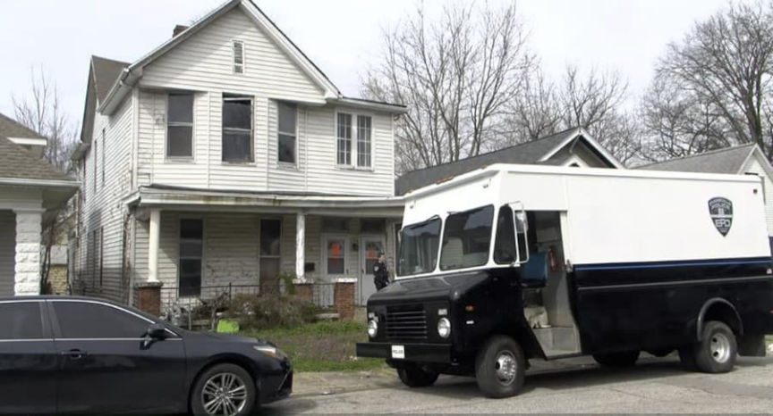

Two Charged for Selling Counterfeit Oxycodone Pills
~2 min read | Published on 2022-07-07, tagged Arrested, Counterfeits, Darkweb-Vendor, Drugs, General-News using 444 words.
A federal grand jury returned an indictment charging two men for selling counterfeit pills on the darkweb.
[em]Edited on July 8, 2022, to correct a price listed in a previous version of this article.[/em]
According to an announcement from the U.S. Attorney’s Office for the Southern District of Indiana, Ethan Parker, 29, of Evansville, used a pill press to manufacture fentanyl-laced counterfeit pills. Parker sold the pressed pills to co-conspirators, including Joshua Harvey, 30, of Evansville. Harvey then resold pills to “mid-level distributors” in their drug trafficking organization, mainly in the Evansville, Indiana, area.
Parker obtained pound quantities of fentanyl powder from “an unknown source of supply” in Louisville, Kentucky. Harvey also drove Parker to a supplier to “acquire pound quantities of fentanyl powder to facilitate the manufacture and distribution of fentanyl-laced counterfeit pills,” according to the press release.
“During the investigation, it is alleged that Parker and Harvey displayed a high degree of technological sophistication, utilizing encrypted messaging applications to purchase, advertise, and sell fentanyl-laced counterfeit pills, as well as utilizing the “Dark Web” and cryptocurrency to pay for drug transactions.”

Harvey and other co-conspirators would purchase pills and communicate with Parker through encrypted messaging applications and Facebook messages. In one instance, Parker directed Harvey to a “channel” on an encrypted messaging application where Parket sold counterfeit pills. In the channel, Parket advertised 50 pills for $375, 100 pills for $750, and 1,000 pills for $5,000. The indictment does not identify the “encrypted” messaging application but based on the description provided, it appears to be referencing Telegram.
On March 10, 2022, Harvey sent Parker a message through Facebook about aquiring counterfeit pills. Parker directed Harvey to a “webpage on the darkweb” where Parker sold pills.

On March 15, 2022, Harvey sent Parker $900 through Cash App; investigators believe the march 15 payment was for Parker’s counterfeit pills.
During the investigation, law enforcement officers seized approximately 140 grams of fentanyl-laced counterfeit pills and powder, two pill presses, and various dies and punches utilized to press pills.
On July 6, 2022, federal law enforcement officers arrested the defendants. Parker faces counts of Conspiracy to Distribute Fentanyl, Distribution of Tableting Machine, and Possession of Tableting Machine. Harvey faces only the Conspiracy to Distribute Fentanyl charge.
Two Evansville Men Indicted for Trafficking Fentanyl and Allegedly Manufacturing Fentanyl-Laced Counterfeit Pills Using a Pill Press | archive.is, justice.gov
Indictment pdf
[em]A previous version of this article listed the price point for 50 pills as $350. The correct number advertised by Parker was $375.[/em]
[em]Edited on July 8, 2022, to correct a price listed in a previous version of this article.[/em]
According to an announcement from the U.S. Attorney’s Office for the Southern District of Indiana, Ethan Parker, 29, of Evansville, used a pill press to manufacture fentanyl-laced counterfeit pills. Parker sold the pressed pills to co-conspirators, including Joshua Harvey, 30, of Evansville. Harvey then resold pills to “mid-level distributors” in their drug trafficking organization, mainly in the Evansville, Indiana, area.
Parker obtained pound quantities of fentanyl powder from “an unknown source of supply” in Louisville, Kentucky. Harvey also drove Parker to a supplier to “acquire pound quantities of fentanyl powder to facilitate the manufacture and distribution of fentanyl-laced counterfeit pills,” according to the press release.
Ethan Parker and Joshua Harvey in mugshots provided by Vanderburgh County Sheriff's Office
“During the investigation, it is alleged that Parker and Harvey displayed a high degree of technological sophistication, utilizing encrypted messaging applications to purchase, advertise, and sell fentanyl-laced counterfeit pills, as well as utilizing the “Dark Web” and cryptocurrency to pay for drug transactions.”

A bag of pills seized by police | 14news.com
Harvey and other co-conspirators would purchase pills and communicate with Parker through encrypted messaging applications and Facebook messages. In one instance, Parker directed Harvey to a “channel” on an encrypted messaging application where Parket sold counterfeit pills. In the channel, Parket advertised 50 pills for $375, 100 pills for $750, and 1,000 pills for $5,000. The indictment does not identify the “encrypted” messaging application but based on the description provided, it appears to be referencing Telegram.
On March 10, 2022, Harvey sent Parker a message through Facebook about aquiring counterfeit pills. Parker directed Harvey to a “webpage on the darkweb” where Parker sold pills.

Police found a pill press during execution of a search warrant.
On March 15, 2022, Harvey sent Parker $900 through Cash App; investigators believe the march 15 payment was for Parker’s counterfeit pills.
During the investigation, law enforcement officers seized approximately 140 grams of fentanyl-laced counterfeit pills and powder, two pill presses, and various dies and punches utilized to press pills.
On July 6, 2022, federal law enforcement officers arrested the defendants. Parker faces counts of Conspiracy to Distribute Fentanyl, Distribution of Tableting Machine, and Possession of Tableting Machine. Harvey faces only the Conspiracy to Distribute Fentanyl charge.
A warning placed on the door of Parker’s home.
Two Evansville Men Indicted for Trafficking Fentanyl and Allegedly Manufacturing Fentanyl-Laced Counterfeit Pills Using a Pill Press | archive.is, justice.gov
Indictment pdf
[em]A previous version of this article listed the price point for 50 pills as $350. The correct number advertised by Parker was $375.[/em]